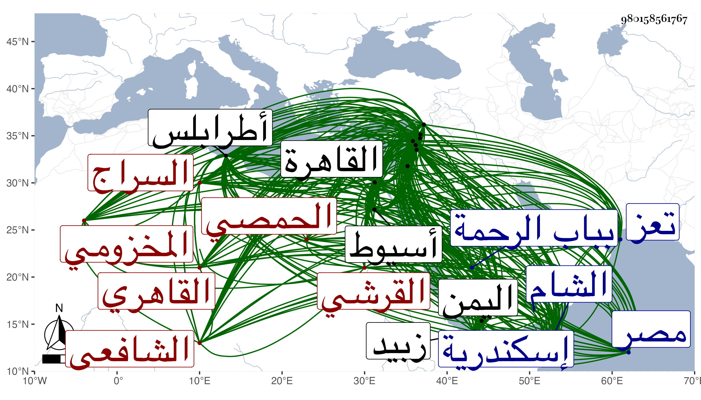

0902Sakhawi.DawLamic.ITO20230111-ara1.EIS1600.980158561767
Biography ID: 980158561767
434
عمر بن موسى بن الحسن السراج القرشي المخزومي الحمصي ثم القاهري الشافعي ويعرف بابن الحمصي . ولد بها في رمضان سنة سبع وسبعين وسبعمائة كما أخبرني به وأختلف النقل عنه فيه وفيمن بعد الحسن كما بينته في مكان آخر ونشأ بها فيما زعم فقرأ القرآن عند العلاء الرديني الضرير وقال أنه تلا به لعاصم على الشهاب البرمي بفتح الموحدة والمهملة الضرير وأنه حفظ الإلمام والمنهاج الفرعي والأصلي وألفية ابن مالك وغيرها ، وعرض المنهاج على شيخه إمام حمص الشهاب أحمد بن الشيخ حسين أحد الآخذين عن الشرف البارزي تلميذ النووي فالله أعلم وتفقه به يسيرا واجتمع فيها بالسراج البلقيني والبدر بن أبي البقا وعرض عليهما بعض محفوظاته وكذا لقي البلقيني بعد ذلك في سنة أربع أو خمس وتسعين حين سفره مع الظاهر برقوق ، وانتقل به أبوه إلى دمشق في سنة سبعين فأخذ الفقه عن الشرف الشريشي والشهاب الزهري وعنه أخذ الأصول والزين عمر القرشي والشهاب بن حجي والعربية عن الأنطاكي والأبياري وأنه سمع على الزينين القرشي المذكور وابن رجب ، وفي بعلبك على العماد بن بردس وأنه سمع عليه مسلما ، ثم نقله أبوه إلى حماة سنة أربع وسبعين فاشتغل بالنحو أيضا على الجمال بن خطيب المنصورية والعلاء بن المعلي ، ثم عاد به إلى دمشق فحضر مجالس الجمال الطيماني وغيره وأنه ارتحل إلى القاهرة عقب الفتنة في سنة أربع وثمانمائة فلازم البلقيني حتى مات وولده الجلال أيضا وأخذ عن الزين العراقي ألفيته رواية وأجاز له ، ثم عاد إلى الشام في سنة سبع فقطنها مدة إلى أن قتل الناصر وناب فيها عن الشمس محمد بن محمد بن عثمان الأخنائي ، ثم ولي قضاء طرابلس استقلالا ثم انفصل عنها وعاد إلى القاهرة ونزل بمدرسة البلقيني ، وصاهر الجلال على جنة ابنة أخيه البدر وأقام عندهم وأذن له في الإفتاء والتدريس فكان في العام الأول يدرس بها ثم ناب عنه في العام الثاني ، وحج مرارا أولها في أوائل القرن وجاور في سنة ثلاث وعشرين واجتمع هناك بابن الجزري وسمع عليه مع شيخنا الزين رضوان وتوجه منها إلى اليمن فدخل تعز وزبيد ونظم هناك ردا على الفصوص لأبن عربي في مائة وأربعين بيتا وراج أمره على أهلها حتى أخذ عنه الجمال محمد المزجاجي وكتب له السراج هذا إجازة وقفت عليها بخط النفيس العلوي فيها من المختلقات ما لا يمشي على من له أدنى معرفة كما بينته في موضع آخر ، ثم رجع إلى القاهرة وسافر مع الجلال لما كان صحبة الظاهر ططر إلى الشام وعاد معه ودخل إسكندرية وغيرها وبعد موت ابن البلقيني ناب عن الولي العراقي في شوال سنة خمس وعشرين بأسيوط عوضا عن قاضيها ابن القوصية حين غضبه منه وحسبه فأقام في قضائها عنه ثم عن العلمي ثم عن شيخنا مدة طويلة وقال أنه عمر بها جامعا وأخذ عنه هناك الكمال أبو بكر السيوطي بل أخذ عنه بالقاهرة أيضا ، ثم ولي قضاء طرابلس أيضا ثم قضاء دمشق عوضا عن البهاء بن حجي في صفر سنة ثمان وثلاثين بأربعة آلاف دينار ثم صرف عنها وولي مرة أخرى في يوم الاثنين ثاني عشر محرم سنة أربع وأربعين ثم انفصل عنها في رجبها بالشمس الونائي بعد تعزز منه في القبول ، وسافر إليها في ذي القعدة ثم وليها أيضا عن الجمال الباعوني قبيل الستين ، وفي خلال ذلك ولي أيضا طرابلس وأضيف إليه مع قضائها نظر جيشها وكذا ولي قضاء حلب ومشيخة الصلاحية ببيت المقدس ونظرها ثم الصلاحية المجاورة لضريح الشافعي تدريسا أيضا ونظرا ، ولم يحمد في شيء من مباشراته وذكر غير مرة لقضاء الشافعية بمصر بعناية زوج ابنته حواء أمير المؤمنين فما تم وكان يزعم لقي قدماء سوى كثير ممن تقدم مما لم يعتمد في شيء منه مع تدافعه واختلاف مقاله فيه بل قال شيخنا أنه لم يدخل القاهرة إلا في سنة أربع عشرة ، وابن قاضي شهبة أنه أخبره أنه رأى ابن كثير يدرس بالجامع الأموي بعد ما عمى مع أن أرفع قوليه في مولده لا يلتئم مع هذا الموت ابن كثير قبله ، نعم سماعه على ابن الجزري والولي العراقي والجلال اليلقيني وشيخنا والطبقة غير مدفوع بل أثبت صاحبنا النجم بن فهد سماعه في التيسير للداني على عبد الله بن خليل الحرستاني وكأنه وقف عليه وكذا كان يملى لنفسه تصانيف كثيرة لم أقف على شيء منها نعم قال شيخنا في حوادث سنة ست وثلاثين من أنبائه أنه نظم وهو على قضاء طرابلس قصيدة تائية تزيد على مائة بيت في إنكار تكفير العلاء البخاري لابن تيمية وموافقته للمصرين فيما أفتوا به من مخالفته وتخطئته في ذلك وفيها أن من كفر ابن تيمية هو الكافر وأن ابن زهرة قام على السراج بسببها وكفره وتبعه أهل البلد لحبهم في عالمهم ففر هذا منهم إلى بعلبك وكاتب أرباب الدولة فأرسلوا له مرسوما بالكف عنه واستمراره على حاله فسكن الأمر وقال الشمس السيوطي الموقع أنه حفظ سطور الإعلام في معرفة الإيمان والإسلام تصنيفه وعمل أيضا لما تزوج الجلال البلقيني هاجر ابنة تغري بردى صداقها عليه في نحو ثلثمائة بيت وقد كثر اجتماعي به ولما كنت بدمشق كان قاضيها حينئذ فسمعت من الشاميين في حقه قوادح بل كان البلاطنسي يرميه بأمر عظيم والبرهان الباعوني يهجوه بالعجر والبجر حتى أنه أعطاني من ذلك ما لو بيض لكان في مجلد . وبالجملة فكان إنسانا طوالا مفوها جريئا مشاركا في الفضائل ذا نظم ونثر متوسطين . مات في العشر الأخير من صفر سنة إحدى وستين ببيت المقدس ودفن بباب الرحمة وبلغني أنه لما وصل الخبر بذلك لدمشق سجد البدر بن قاضي شهبة لله شكرا وسر الخلق هناك بموته ولم يصلوا عليه صلاة الغائب عفا الله عنه وإيانا ، وعندي في ترجمته من معجمي زيادة على ما هنا .
